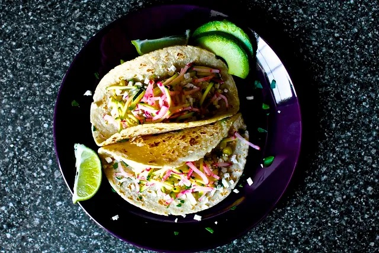

Corn Tacos with Slaw

Description
In the tradition of Deb Perelman herself, I've adapted this recipe from Smitten Kitchen.
Due to some unseasonably warm weather the past week, we were on a mission to find vegetarian recipes we
could cook without using the oven. Enter this recipe from Smitten Kitchen, with some adjusments.
Non-vegetarians might scoff at tacos - filled with corn?! - but we know better. Also, we're not vegetarians,
we just freaking love vegetables. And tacos. These cook up quick and are complex and satisfying, all
with the added bonus of not making your kitchen unbearably hot. Win-win.
Ingredients
For tacos:
- 4 ears corn, husked, silks removed
- 1 medium white or yellow onion, finely chopped
- 2 cloves garlic, minced
- 2 tbsp butter
- 1 tablespoon olive oil
- salt & pepper
- olive oil
- 1/4 cup chopped cilantro
- 1/2 cup cotija cheese, crumbled
- 1/2 cup mayonnaise
- 10-12 6-in tortillas (I recommend trying flour, but I'm a fan)
- One lime, juiced
- TAJINE
For slaw:
- 1 bunch red radishes, trimmed
- 1/2 small head red or green cabbage
- 2 limes, juiced
- 1/2 cup cilantro, roughly chopped
- Salt to taste
Steps
-
Make the slaw. Slice radishes into matchsticks (I recommend a mandoline for this recipe). Thinly slice the cabbage.
Place in large bowl. Add juice from limes, salt, and cilantro. Toss to combine, then set aside.
-
Prepare the corn. Cut corn kernels from corn using a long, thin knife. Heat a large skill (cast iron is ideal here)
to medium-high heat. Melt butter and olive oil together. Add garlic and onion and cook until slightly softened, about 1 minute. Add corn
and cook through, about 5 minutes. If you're going for the charred taste of the original recipe, you could removing most of the corn,
and cooking about 1/2 cup until it's blackened. This is an experimental tip for those of us without grills and gas stoves. Add lime juice
off heat.
-
Prepare mayo-cheese mixture. Look, it's delicious. Just mix the two together and don't be weirded out if you don't like
cottage cheese, because that's what it looks like.
-
Prepare your dang tacos. Take a spoonful of the mayo-cheese mixture and spread it on your tortilla. Top with the corn,
a very liberal sprinkle of tajine, slaw, and cilantro. Enjoy your life, which is now so much richer.